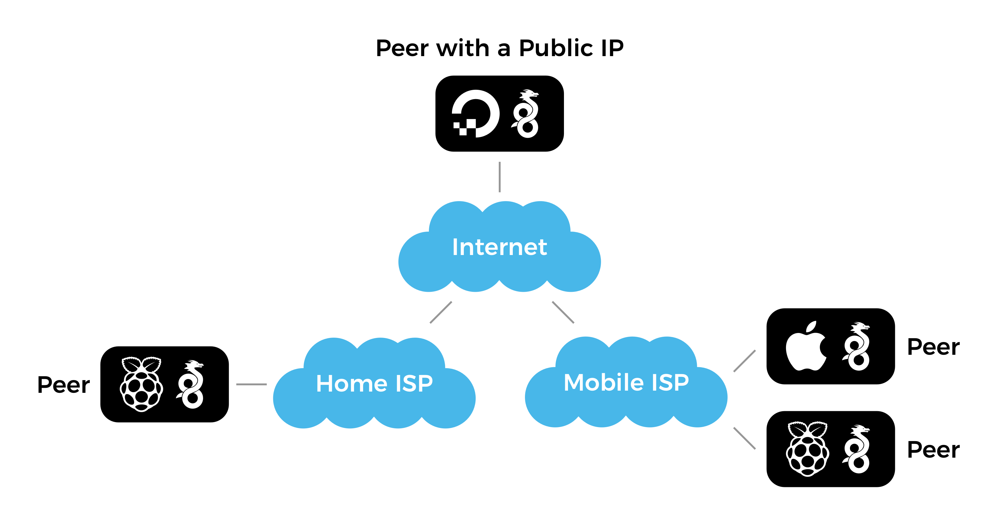

WireGuard is an awesome tool for securely accessing your Raspberry Pi computers even behind mobile networks that don’t provide a public IP address. It has client applications for iOS, macOS, Windows and all flavors of Linux.
I use WireGuard to access Home Assistant and my solar powered Raspberry Pi surveillance camera from anywhere.

Devices connected to the same WireGuard network can access all other devices on the same network. You can safely view webcam feeds or internet connected device configuration pages without exposing them to the public web. WireGuard is awesome!
Requirements and System Overview
WireGuard nodes require at least one publicly accessible node or peer which acts as a “bounce server” for all other nodes that are behind private networks that use NAT. The public node can be a Raspberry Pi connected to your home internet with a real (and potentially dynamic) IP address or the cheapest virtual private server on DigitalOcean with WireGuard installed and all peers listed in the network config file.
Important WireGuard History
In March 2020 WireGuard module was included in the Linux kernel version 5.6. Here are instructions for installing WireGuard while you’re running a Linux distribution that is based on an earlier version of Linux kernel.
Run uname -a to determine the current Linux kernel version. It should return something like this:
Linux raspi 4.19.118-v7+ #1311 SMP Mon Apr 27 14:21:24 BST 2020 armv7l GNU/Linuxwhere 4.19.118-v7+ is the version of the Linux kernel on your device.
Install using Package Manager
WireGuard isn’t included in the official Raspbian distribution, yet. You can verify that by trying to install WireGuard from the package repository:
sudo apt-get install wireguardIf that fails, you need to install and compile it from the source files as described below. There are tutorials that suggest using packages from the Debian repository but I wouldn’t recommend that.
Install from Source
The official instructions for compiling WireGuard from source files have been updated in early 2020 after the introduction of a separate package wireguard-linux-compat for the WireGuard Linux kernel module which has been decoupled from the user-space tools wireguard-tools.
We need to install the following two packages:
- WireGuard kernel module only for systems with Linux kernel below version 5.6, and
- WireGuard command-line tools for interacting with the application.
First, install the build process dependencies:
sudo apt-get install raspberrypi-kernel-headers libmnl-dev libelf-dev build-essential gitClone and build the kernel module only if you’re running a Linux kernel version 3.10 to 5.5:
git clone https://git.zx2c4.com/wireguard-linux-compat
make -C wireguard-linux-compat/src -j$(nproc)
sudo make -C wireguard-linux-compat/src installClone and build the wg and wg-quick command-line tools:
git clone https://git.zx2c4.com/wireguard-tools/
make -C wireguard-tools/src -j$(nproc)
sudo make -C wireguard-tools/src installThat’s it! Now you need to configure the WireGuard to automatically start during the boot and which peers and servers to connect to.
Configure WireGuard
See this excellent and elaborate guide for configuring WireGuard or follow the quick instructions below.
1. Generate the Authentication Keys
A pair of a private and a matching public key is used to communicate and authenticate the current instance of WireGuard with the rest of your WireGuard network. Use the wg utility to generate those keys.
First, set the file permissions mode for all following operations to 077 using umask 077 which translates to “only allow the current user to read the created files”:
umask 077Then generate the private key and store it in privatekey file in the current directory:
wg genkey > privatekeyThe generate the matching public key to be referenced in all your WireGuard network peers from the privatekey that we generated previously:
wg pubkey > publickey < privatekeyThe > and < operators are used to send the output from one command as an input for another command. In this case we’re sending the contents of privatekey into wg pubkey which then produces the publickey file in the current directory.
Use cat privatekey and cat publickey to output both keys to the terminal for reference.
2. Configure the WireGuard Network Interface
Your WireGuard installation can be associated with multiple WireGuard networks and each of them needs a dedicated network interface that is configured by adding *.conf files under the /etc/wireguard directory.
For example, we’ll add a network called wg0 by creating /etc/wireguard/wg0.conf with the following contents:
[Interface]
Address = 10.200.200.X/32
PrivateKey = <Your Private Key>
[Peer]
PublicKey = <Server Public Key>
AllowedIPs = 10.200.200.0/24
Endpoint = <Server IP address or FQDN>:51820
PersistentKeepalive = 25The [Interface] section is where we define this computer on the network:
- Replace
<Peer Private Key>with the contents of theprivatekeywe generated earlier. This string should never leave the device or be shared publicly. The contents of thepublickeycan be shared publicly and has to be known by all other peers that need to connect to your computer. - Set the
Addressto an IP address to be associated with this device on your network. Notice the/32suffix which provides some additional context for how the address is used.
In the [Peer] section we define other WireGuard nodes or servers that we want to connect to:
PublicKeyis the public key of the server we’re connecting to (not the one we generated above).Endpointis the public hostname (if the peer is able to resolve the IP address) or the public IP address of the server.
See this WireGuard configuration reference for the explanation of all configuration parameters.
We can also use the wg command line tool to generate the same file:
sudo wg set wg0 \
private-key <file path> \
peer <Server Public Key> \
endpoint <Server IP address or FQDN>:51820 \
allowed-ips 10.200.200.0/24
persistent-keepalive 253. Enable the WireGuard Interface
Enable the wg0 interface we configured:
sudo wg-quick up wg0Use wg-quick down wg0 to stop the interface.

wg command on Raspberry Pi showing that it’s connected to a WireGuard server which is just a regular WireGuard peer.4. Start WireGuard on Boot
Register a script that came with the WireGuard utilities to start the WireGuard service automatically using Systemd during boot:
sudo systemctl enable wg-quick@wg0where wg0 is the name of the interface to start during the boot.
To start the service right away:
sudo systemctl start wg-quick@wg0To see the current status of the service:
sudo systemctl status wg-quick@wg05. Debug WireGuard
Use the following commands to debug the WireGuard connection:
sudo wg showto monitor the connections.journalctl --follow wg-quick@wg0to monitor the WireGuard startup.
Hi Kaspars,
It looks like WireGuard needs a publlc Bounce server with a non-NAT public IP address to set up the connection where both VPN endpoints are behind NAT. Did you use a publicly available Bounce Server?
That is an excellent point! I’ve updated the article to include the requirements and the system overview.
I’m using a $5 virtual server on DigitalOcean to host a publicly accesible WireGuard node that serves as a bounce server for the other nodes behind NATs.
I wonder whether it would be enough to use a Dynamic DNS service for the bounce node? can wireguard interpret a hostname or does it absolutely require an IP address for the bounce node?
Yes, the bounce node can be specified as a fully-qualified domain name as long as the peers are able to resolve the IP address. I use this for my personal network to ensure I don’t have to update every node if I decide to change the bounce server. I’ve updated the examples to include FQDN in addition to “Server IP address” for the
Endpointvalue.Hi Kaspars,
If I want to connect office’s branches together to run an IP Phone system, this means without one branch at least having Static/Public IP it wont work?
If yes, will using VPS like you did will route all the traffic through that server? This will make the calls lags I believe or I am missing something?
Forgive my short knowledge in networking and VPN in advance.
Thanks,
I’m not very familiar with a lot of networking concepts myself 😂
I think the goal is to have at least one node that can be reached by all peers unless they’re able to find each other through other means. If all nodes are physically isolated (on different networks) than a bounce server is required for nodes to establish the connection, and yes — all traffic would get routed through that node and possibly increase the latency.
I assume the offices have real (possibly dynamic) IP addresses so could you have one of them host a WireGuard bounce server that has the required 51820 port open from public internet?
Hi Kaspars,
Thank you for getting back on this.
Yes, offices are in different locations. They have Internet through Fiber, Wireless and sometimes DSL and all with dynamic IP (ISP DHCP), so even I hosted a WireGuard bounce server – whatever this means :D – it will still don’t have a Static/Public IP. About the port part, this I need to check with the ISP at that branch. But I am using WG with some commercial VPN providers and it’s working fine (I don’t know if this can relate in any way).
Thanks for the nice tutorial. I tried it step by step and got my phone and my windows computer connected. Only the admin page of my router was not accessible with is strange but not necessary. What is driving me crazy is that it is not working on any Linux distro and also not on ios. What makes the difference between linux/ios/android/windows. Any thought about that?
Thanks!
I’m glad you got it working!
For the router admin page you would probably need to setup port forwarding on Raspberry Pi since the WireGuard network is on a different subnet (such as
10.0.0.1/24) compared to your home network (such as192.168.0.1/24), right? See this follow-up post on WireGuard routing and port forwarding.Another thing to check is the version of WireGuard on your devices. I’ve seen instances where pre-1.0 releases are not working with the newest version bundled with the Linux kernel. Be sure to also check the
AllowedIPscontents on all devices to ensure they all include the same network.Be sure to check this awesome WireGuard documentation for other debugging ideas.